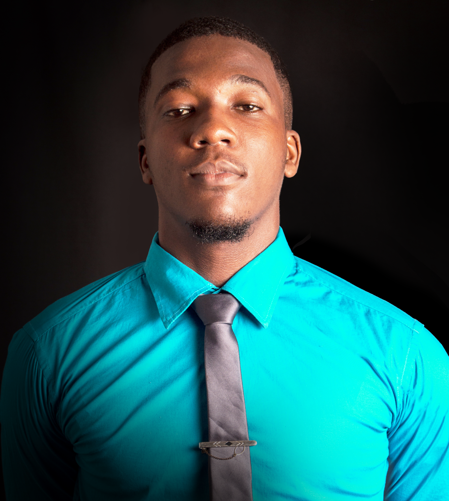
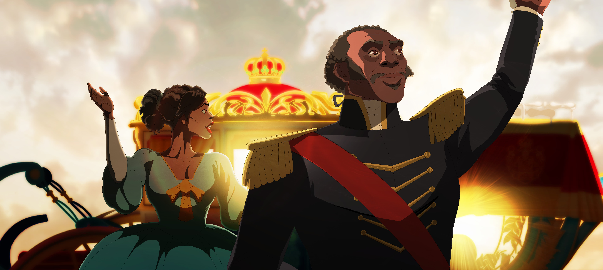
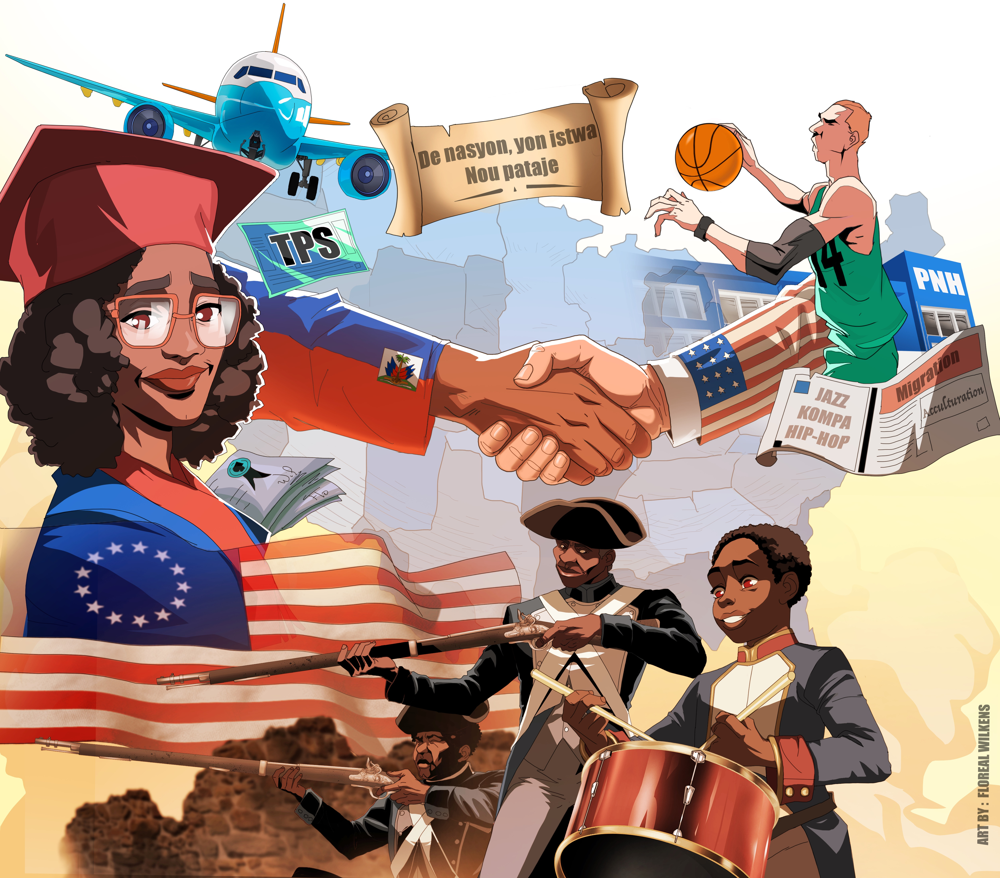
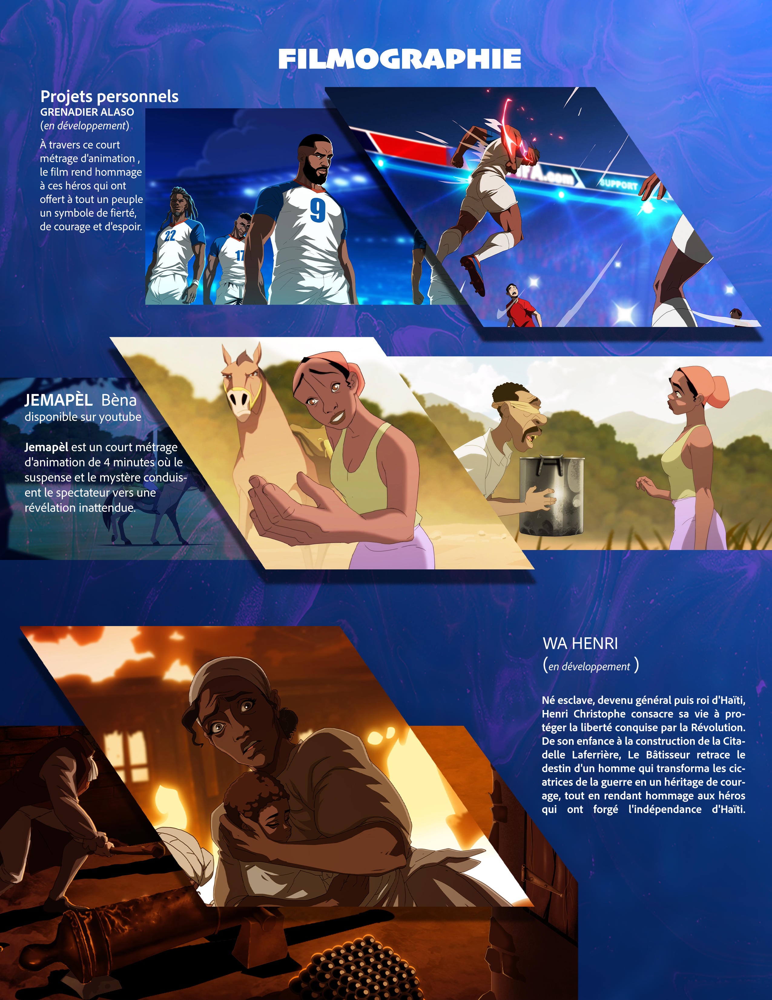
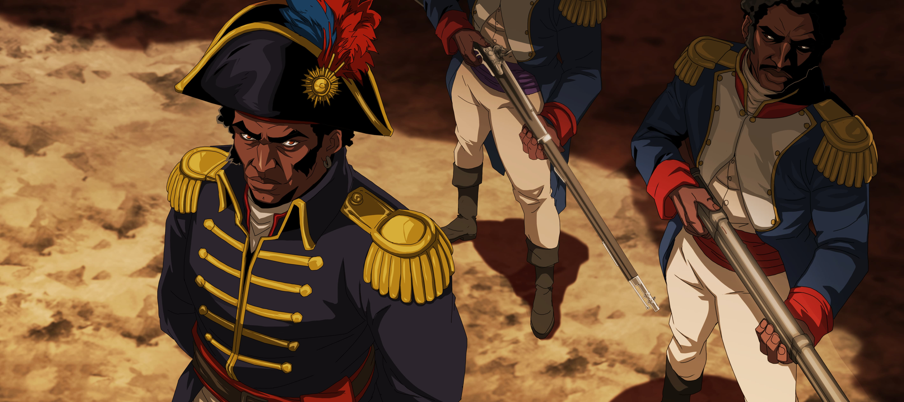

Mon parcour
Je m’appelle Wilkens Floréal, animateur 2D, illustrateur, dessinateur de bande dessinée et directeur artistique haïtien, également connu sous le nom de Wilkens Art. Autodidacte avec plus de 18 ans de pratique artistique, je travaille principalement dans l’animation 2D, l’illustration, le character design, le storytelling et la création d’univers visuels.
Mon parcours professionnel m’a notamment conduit à travailler comme illustrateur et graphiste à la Maison Henri Deschamps de 2017 à 2022, où j’ai participé à la création de personnages, de scènes historiques et de contenus pédagogiques. En 2022–2023, j’ai assuré la direction artistique du court métrage d’animation JEMAPÈL, en participant au développement du storytelling, des personnages et de l’univers visuel. Le projet a été lauréat de Transcultura UNESCO 2023 en France, puis nommé au FestivalOuverture 2025 à Bordeaux. J’ai également poursuivi mon perfectionnement en Europe dans les domaines de la création visuelle, de l’animation et des VFX. Aujourd’hui, mon travail s’étend à la direction artistique, au développement visuel et à la supervision de productions d’animation 2D.
Projets marquants : JEMAPÈL — Direction artistique, storytelling, character design et développement visuel, 2022–2023.
Wa Henri — Directeur de production sur le long métrage d’animation, avec supervision artistique et animation 2D, 2024–2026.
Choucoune — Développement du concept visuel, storytelling et direction artistique, 2025.
Maison Henri Deschamps — Illustration, graphisme et création de contenus visuels et pédagogiques, 2017–2022.
Aujourd’hui, je souhaite poursuivre mon évolution dans l’animation 2D, la direction artistique et la production audiovisuelle, tout en développant des projets capables de valoriser le storytelling et la créativité haïtienne. Mon ambition est de participer à la création de productions visuelles fortes et originales, capables de porter des histoires haïtiennes vers un public plus large et de contribuer au développement de l’industrie de l’animation en Haïti.




{kind=link}